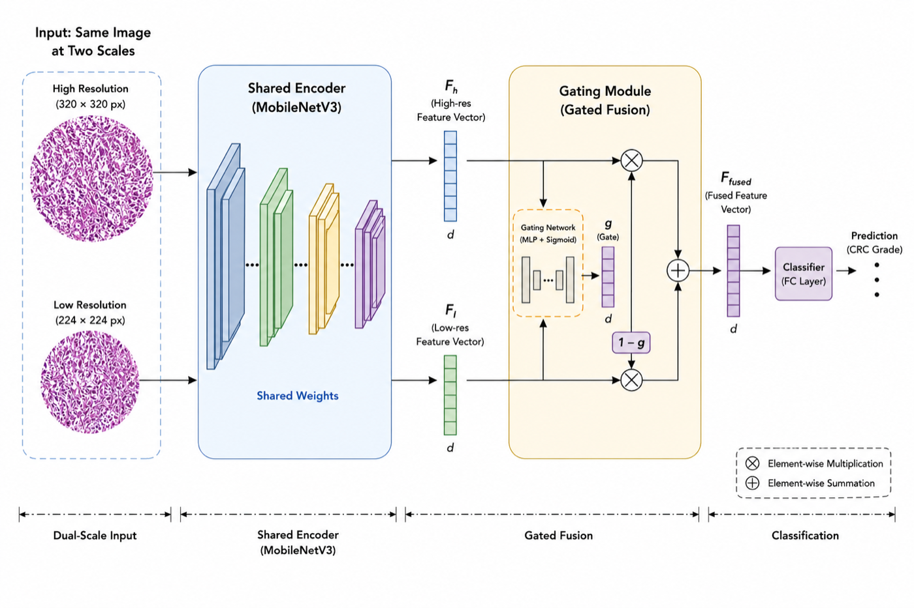

01 / Scholarly workPublications
Accepted
2026 IEEE 38th International Conference on Tools with Artificial Intelligence (ICTAI)
2026 International Conference on Digital Image Computing: Techniques and Applications (DICTA)
The public benchmark leaks: 451 of 1650 image files are duplicates or cross-split copies of training content, including 49 of the 164 released test images. Every result is computed on content-disjoint splits rebuilt from scratch, with the audit manifests included so the rebuild can be checked.
| Signal added | AUROC | Δ vs confidence |
|---|---|---|
| Detector confidence (baseline) | 0.790 | - |
| + geometry and density | 0.798 | +0.008, interval spans zero |
| + test-time-augmentation instability | 0.813 | +0.022 [+0.010, +0.036] |
| + counterfactual removal | 0.818 | +0.028 [+0.015, +0.041] |
| + absolute position (diagnostic only) | 0.832 | +0.041 [+0.029, +0.054] |
Test-time-augmentation instability is the first signal whose interval clears zero, and it is what the released model uses. The position features score higher but depend on absolute image coordinates, so they are kept as a diagnostic rather than shipped. At 0.72 coverage the model suppresses 209 of 371 false detections against 194 for raw confidence at the same review burden, returning about three boxes per field to a human. A 3-seed YOLOv8s ensemble reaches AP50 0.792 on the clean split, though its localisation is slightly blurrier than a single model.
2026 International Conference on Digital Image Computing: Techniques and Applications (DICTA)
Measures worst-group detection accuracy and subgroup-conditioned calibration together, over seven independently trained seeds.
| Training objective | Seeds | Mean ± SD |
|---|---|---|
| Present-group equalization | 7 | 0.39 ± 0.16 |
| DRO-style | 3 | 0.12 ± 0.16 |
| Empirical risk minimization | 7 | 0.09 ± 0.13 |
Present-group equalization wins on all seven seeds (sign test and Wilcoxon, p = 0.0078) and never collapses, while plain ERM reaches zero worst-group AP on three of seven runs. Pooled calibration hides the same kind of variation: expected calibration error is 0.07 on the largest visual style group and 0.42 on the smallest, against 0.09 pooled. Two of the paper's three questions come back negative, and it reports them that way.
2026 5th IEEE International Conference on Robotics, Automation, Artificial Intelligence and Internet-of-Things (RAAICON)
Under Review
Informatics in Medicine Unlocked (Elsevier), 2026

| Training paradigm | Grouped by specimen | Image-level | Inflation |
|---|---|---|---|
| Centralized | 0.808 [0.774, 0.845] | 0.904 [0.898, 0.911] | +9.6 pts |
| FL-IID (FedProx) | 0.807 [0.781, 0.832] | 0.892 [0.882, 0.903] | +8.6 pts |
| FL-Dirichlet (FedProx) | 0.781 [0.750, 0.809] | 0.856 [0.819, 0.878] | +7.5 pts |
CRC-HGD ships without patient IDs, so specimen groups have to be inferred from the filenames. Once they are, no group is allowed to cross train, validation or test. Skip that step and macro F1 comes out 7.5 to 9.6 points higher than it should. That gap is the main point of the paper.